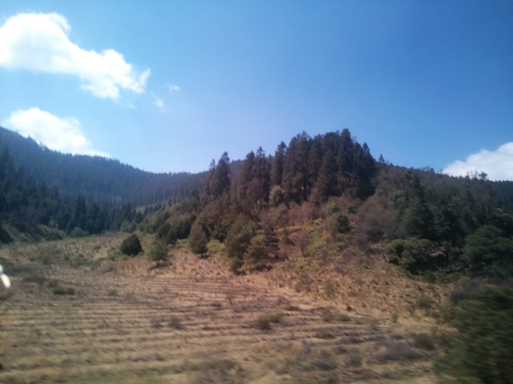

Me gusta mucho la música y José Madero es mi cantante favorito
Este es un paisaje de un viaje

Es un la foto de un paisaje de uno de mis viajes, la foto es de autoria propia
Galeria Paisajes
Mi lista de Lugares Favoritos de viajes
Lugares a los que quiero ir
- Cancún
- Guanajuato
- Veracruz
Lista de algunos lugares que he visitado
| Primeros Lugares |
Lugares en Guerrero |
Lugares Lejanos |
Lugares Actuales |
| Michoacán |
Pilcaya |
Chiapas |
CDMX |
| Puebla |
Tixtla |
Moroleón |
Acapulco De Juárez |
| Tlaxcala |
Atoyac |
Oaxaca |
Taxco |